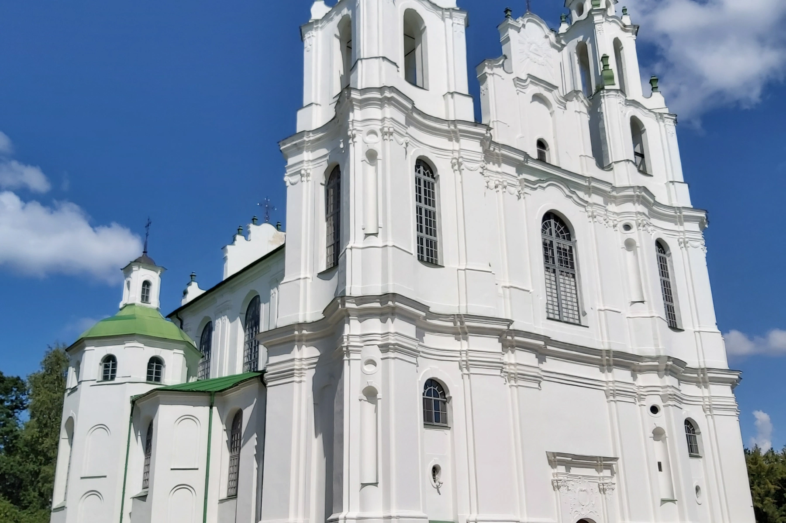
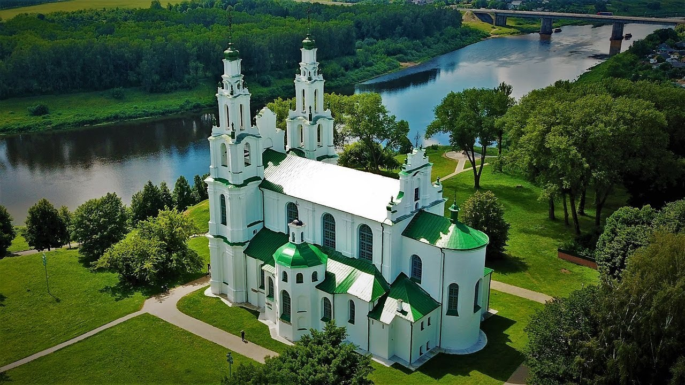

Софийский собор


Софийский собор в древнем Полоцке – уникальный храм среди немногих
одноименных православных святынь Европы, один из самых ранних в Древней
Руси и первый каменный на территории Беларуси. Этот старинный памятник
представлен в предварительный Список всемирного наследия ЮНЕСКО. Собор
Софии Премудрости Божией с поистине особенной и символичной архитектурой
был построен в Полоцке на правом берегу Западной Двины в ХI веке. В
середине XVIII-го его основательно перестроили по проекту архитектора Яна
Глаубица в стиле виленского (позднебелорусского) барокко. Однако до наших
дней от храма ХI века дошли фрагменты кладки, практически полностью
сохранившийся древний фундамент, части апсиды, столбов и стен, а также
удивительные фресковые росписи 2-й половины ХI в. Собор и сегодня поражает
красотой и величием. Интересно, что точную копию Софийского собора ХI века
планируют построить также на берегу Западной Двины, но уже в другом
знаменитом городе Беларуси – Витебске. Каменный собор в Полоцке появился
после своих "старших сестер" в Киеве и Новгороде, построенных по образцу
собора в Константинополе, и стал четвертым в мире храмом Святой Софии.
Греческое слово "софия", означающее "мудрость, мастерство", полочане
объясняли шире – как великую человеческую общность, проявление единства
жителей княжества. Впервые храм упоминается в "Житии преподобной Ефросинии
Полоцкой" и "Слове о полку Игореве" ХII века. Величественное строение
возводили византийские мастера и горожане в 1044 – 1066 годах по
распоряжению князя Всеслава Чародея. Символ независимости и могущества
Полоцкого княжества, храм словно олицетворял белый корабль, плывущий по
Двине. Построенный по византийским канонам, но в традициях полоцкого
зодчества, храм располагался в Верхнем замке между хоромами князя и
усадьбой епископа, что говорило о роли церкви в государстве. Полоцкая
София стала православным и культурно-просветительским центром. Здесь
находились богатейшая библиотека, архив, казначейство, магистрат,
хранились религиозные святыни и устраивались приемы послов. В соборе была
и княжеская усыпальница, где археологи обнаружили 16 саркофагов. В 1596
году после заключения Брестской церковной унии храм передан униатской
церкви и восстановлен после пожаров 1607 и 1648 годов. При перестройке по
распоряжению архиепископа Иосафата Кунцевича были сняты верхи угловых
боевых башен храма-крепости. Во время Северной войны по приказу Петра I
собор использовался как склад амуниции и боеприпасов, а после взрыва в
1710 году был значительно разрушен. В XVIII веке благодаря полоцкому
архиепископу Флориану Грибницкому известный зодчий Ян Криштоф Глаубиц
отстроил Софийский собор в стиле виленского барокко. Во время войны 1812
года в стене собора в специально сделанной нише хранилась священная
православная реликвия – Крест Ефросинии Полоцкой. В 1913 году проведена
реставрация сохранившихся образов на стенах храма. Во времена Великой
Отечественной войны в соборе размещался гарнизонный костел немецких войск.
В настоящее время Софийский собор – один из крупнейших культурных центров
Беларуси. Здесь совершаются богослужения и обряды, проходят экскурсии,
концерты и творческие вечера. Софийский собор как музей истории
архитектуры и концертный зал входит в состав Национального Полоцкого
историко-культурного музея-заповедника.